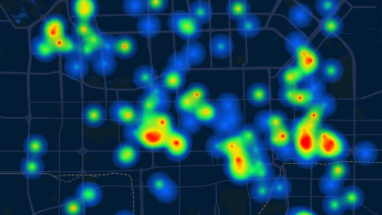

时空可视化平台
提供多场景地图数据可视化能力，实现时空地理大数据的挖掘、统计、分析
强大的渲染引擎
平台提供丰富的数据展示效果，如点、线、面、热力、多种地图、动效等展示效果
- 点
- 线
- 面
- 热力
- 地图
- 光照/天气
- 动效果

强大的编辑辅助功能
平台除提供地图展示基础功能外，新增了许多新功能，最大限度满足用户的业务需求
- 检索
- 对象选择
- 楼宇拆解
- 自定义POI
- 车流轨迹
- 路况
- 热力图
- 路径规划
- 测距
- 标注
- 可视域分析

多类型数据融合
- 基础地理信息数据
- 业务专题数据
- 智能感知数据
卫星影像数据
DEM高程数据
高精度路网数据
高精度背景数据
地名地址数据
建筑物数据
道路设施数据
室内地图数据
政务数据
警务数据
交通数据
地产数据
文旅数据
水务数据
农业数据
更多
视频监控数据
RFID数据
可定位移动终端设备数据
自定义专属业务地图
平台提供多种风格的地图模版，您可以使用这些地图模版进行编辑，创建属于您自己的业务地图
标准
兵工蓝
暮山紫
极夜蓝
烟雨灰
深空灰
案例展示
智慧城市
通过对现实城市场景从传统的二三维抽象地图升级为四维空间的全要素时空全息场景，在实现城市信息模型可视化基础上展现地理信息要素的现状与变迁，实现时空地理大数据的挖掘、统计、分析和决策，进而推动城市管理数字化、虚拟化、可视化，全面镜像现实城市场景，为城市精细化管理赋能，实现“所见即所得”的决策能力。北京商务中心区以时空数据呈现地图为底座，通过对其7平方公里的区域进行现实场景镜像还原，并对其重点区域进行精细化呈现，着重刻画城市全貌，全面构建智慧城市的统一管理平台；用可视化的直观形式呈现更加科学的城市发展规划。
智慧交通
通过IOT、三维可视化技术、交通业务场景融合，呈现智能交通场景的可视化感知。全面提升运营管理效能、提高突发事件响应效率；构建交通仿真场景“一张图”，再现交通流运行过程，为拥堵溯源等交通流难题提供可靠的工具，为管理者提供可靠的决策依据。打造规范化、系统化、智能化的智能交通管理平台；智能预判预警识别能力，最大限度降低交通运营安全隐患。
智慧物流
基于时空可视化地图为不同货物运输业务提供智能调度、智能配载服务，有效提高货运企业排单效率，减少运输里程，提高车辆装载率；提供专属货车路线规划和货车导航的能力，让货车司机和承运商享受更专业的服务。
智慧港口
基于时空可视化技术，整合多渠道数据资源，实现港区现实世界在数字世界的孪生镜像，全面打造港口数字化统一监管平台；通过优化港口各作业环节，提升港口运营效能；可对港口区域内人员作业进行实时监控、保障安全作业、高效生产，增强港区运营协同性，打造安全、高效、环保、智能等维度港区“一张图”，助力港区提升科学化、智能化的经营决策水平，提升行业竞争力。
智慧应急
基于时空可视化地图统筹设计、建设、管理和更新应急资源空间数据库，实现支撑应急信息一张图，统一为应急信息化建设提供地理空间信息技术支撑和数据服务。通过对安防、消防、交通可视化数据呈现，实现超精细化模型构建、分层管理；针对紧急事件点对点应急指挥，智能躲避拥堵，规划最佳路径使救援人员到达事件现场，为应急指挥提供可视化监控、分析、预警能力。
智慧水务
基于地理位置信息将水务、给排水、水文、气象等信息整合为水务“一张图”，建立水务大数据中心，标准化数据存储，提供大数据云服务，实现给排水等水务大数据的有效管理；以云服务为基础，保证数据的现势性，实时监测，实现水务数据的宏观呈现、空间分析、监测预警功能；针对水务生态治理、污染源防治、污染扩散分析、水质监测、水位监测、防灾预警、流量分析、淹没模拟推演、水利设施调控等业务场景，建立智慧水务综合管理平台，打破信息孤岛，及时、准确、全面地获取信息，保证数据的现势性、真实性、权威性，实现各类资源的信息共享，助力管理者提升水务管理效能。